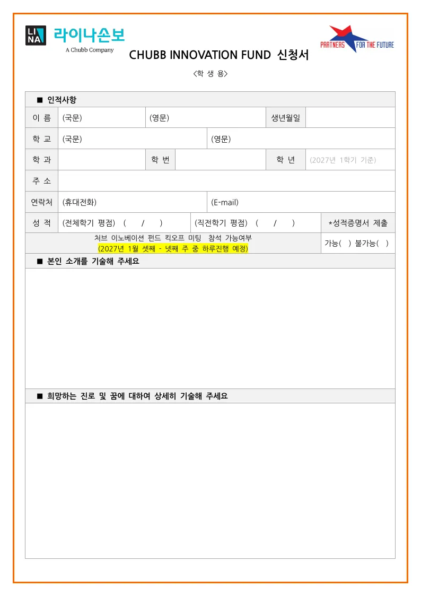
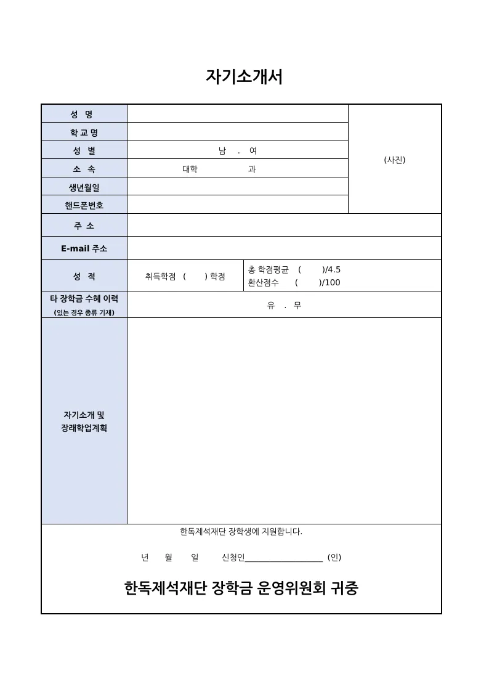
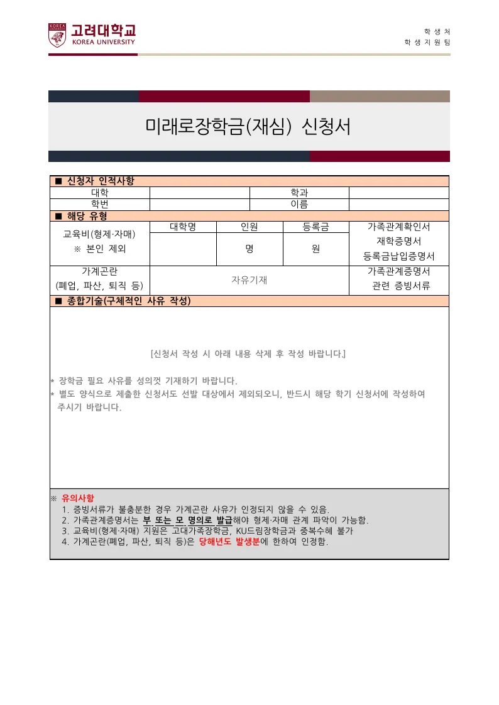

앱에 PDF 사본으로 올라와 있는 신청서 59종의 첫 쪽을 전부 펼쳐 보고, 가장 정돈된 세 양식을 골라 디자인·배치·말투를 그대로 옮겼습니다. 기관 로고·이름은 옮기지 않았고, 안에 담는 칸은 지난 시안 A(인적 11칸 · 서술 3문항 · 자격 · 서류)와 같습니다. 예시 공고는 「배재장학재단 모범학생장학금(자립지원)」, 인적사항 값은 예시입니다.
본뜬 양식: 라이나손보 「CHUBB INNOVATION FUND 신청서」. 59종 가운데 선이 가장 가늘고 행이 넉넉해 요즘 문서처럼 보입니다. 서술 칸은 이름표 없이 「■ 질문 한 줄 → 넓은 빈 칸」.

본뜬 원본 · 앱에 올라와 있는 사본
※ 앱 자체 제작 문서입니다
배재장학재단 모범학생장학금(자립지원) 지원문서
<학생용>
| 인적사항 | |||||
| 이름 | 김한장 | 생년월일 | 2004. 3. 14. | 학년 | 3학년 (6학기) |
|---|---|---|---|---|---|
| 학교 | 한국외국어대학교 | 학번 | 202100000 | ||
| 학과 | 영어학과 | ||||
| 주소 | 서울특별시 강서구 ○○로 00 | ||||
| 연락처 | (휴대전화) 010-0000-0000 | (E-mail) hj@example.com | |||
| 성적 | (직전학기 평점) 3.9 / 4.5 | (이수학점) 14학점 · (지원구간) 6구간 | |||
| 장학금 신청 동기를 기술해 주세요 | |||||
| 등록금 부담을 덜고 학업에 온전히 집중하고 싶어 지원합니다. 학기 중 근로로 생활비를 마련하고 있어 장학 지원이 학업을 이어가는 데 큰 힘이 됩니다. | |||||
| 교내·외 활동 내역을 기술해 주세요 | |||||
| 전공 학회와 봉사 동아리에서 꾸준히 활동하며 협업과 책임감을 길렀습니다. | |||||
| 학업 및 진로 계획을 기술해 주세요 | |||||
| 남은 학기 동안 전공 심화 과목을 집중 이수하고, 졸업 후에는 전공을 살려 사회에 기여하겠습니다. | |||||
| 지원 자격 · 제출 서류 확인 | |||||
| 지원 자격 | 산업체 또는 배재 대학 내 근로 학생 등록금 납부금액이 100만원 이상인 학생 모·부자 가정의 자녀 또는 청소년 가장 | ||||
| 제출 서류 | 성적증명서 재학증명서 주민등록등본 (주민번호 공개로 제출) 장학생 신청양식 | ||||
본뜬 양식: 한독제석재단 「자기소개서」. 문서 전체가 굵은 틀 하나에 들어가고, 왼쪽 이름표 열만 옅은 청색입니다. 맺음말·날짜·서명·「귀중」까지 틀 안에 있어 가장 격식 있어 보입니다.

본뜬 원본 · 앱에 올라와 있는 사본
※ 앱 자체 제작 문서입니다
장학금 지원문서
| 성 명 | 김한장 | 생년월일 | 2004. 3. 14. |
|---|---|---|---|
| 학 교 명 | 한국외국어대학교 | 소 속 | 영어학과 3학년 (6학기) |
| 학 번 | 202100000 | 핸드폰번호 | 010-0000-0000 |
| 주 소 | 서울특별시 강서구 ○○로 00 | ||
| E-mail 주소 | hj@example.com | ||
| 성 적 | 취득학점 ( 14 ) 학점 | 직전학기 평점 ( 3.9 ) / 4.5 · 지원구간 ( 6 ) | |
| 신청 동기 | 등록금 부담을 덜고 학업에 온전히 집중하고 싶어 지원합니다. 학기 중 근로로 생활비를 마련하고 있어 장학 지원이 학업을 이어가는 데 큰 힘이 됩니다. | ||
| 교내·외 활동 | 전공 학회와 봉사 동아리에서 꾸준히 활동하며 협업과 책임감을 길렀습니다. | ||
| 학업 및 진로 계획 | 남은 학기 동안 전공 심화 과목을 집중 이수하고, 졸업 후에는 전공을 살려 사회에 기여하겠습니다. | ||
| 지원 자격(해당 항목 표시) | 산업체 또는 배재 대학 내 근로 학생 등록금 납부금액이 100만원 이상인 학생 모·부자 가정의 자녀 또는 청소년 가장 | ||
| 제출 서류 | 성적증명서 재학증명서 장학생 신청양식 주민등록등본 (주민번호 공개로 제출) | ||
| 위 내용은 사실과 다름이 없습니다.
2026년 11월 23일 지원자 김한장 (인) 배재장학재단 | |||
본뜬 양식: 고려대학교 「미래로장학금(재심) 신청서」. 맨 위에 기관·부서 머리글, 삼색 띠가 위아래로 감싼 회색 제목 판, 색 절 띠, 맨 아래 회색 유의사항 상자. 59종 가운데 유일하게 「디자인된」 문서입니다. 색은 앱의 잉크·금색으로 바꿨습니다.

본뜬 원본 · 앱에 올라와 있는 사본
모범학생장학금(자립지원) 지원문서
| ■ 신청자 인적사항 | |||
| 대학 | 한국외국어대학교 | 학과 | 영어학과 |
|---|---|---|---|
| 학번 | 202100000 | 이름 | 김한장 |
| 생년월일 | 2004. 3. 14. | 학년(학기) | 3학년 (6학기) |
| 연락처 | 010-0000-0000 | 이메일 | hj@example.com |
| 주소 | 서울특별시 강서구 ○○로 00 | ||
| 직전학기 성적 | 3.9 / 4.5 · 14학점 | 지원구간 | 6구간 |
| ■ 해당 유형 | |||
| 지원 자격 | 산업체 또는 배재 대학 내 근로 학생 등록금 납부금액이 100만원 이상인 학생 모·부자 가정의 자녀 또는 청소년 가장 | ||
| ■ 종합기술(신청 동기) | |||
| 등록금 부담을 덜고 학업에 온전히 집중하고 싶어 지원합니다. 학기 중 근로로 생활비를 마련하고 있어 장학 지원이 학업을 이어가는 데 큰 힘이 됩니다. | |||
| ■ 종합기술(교내·외 활동 · 학업 및 진로 계획) | |||
| 전공 학회와 봉사 동아리에서 꾸준히 활동하며 협업과 책임감을 길렀습니다. 남은 학기 동안 전공 심화 과목을 집중 이수하겠습니다. | |||
| ※ 제출 서류 1. 성적증명서 2. 재학증명서 3. 주민등록등본 (주민번호 공개로 제출) 4. 장학생 신청양식 | |||
2026년 11월 23일 지원자 김한장 (서명)
| 1 기업 재단형 | 2 전통 재단형 | 3 대학 본부형 | |
|---|---|---|---|
| 선 | 가는 회색 | 검은 선 + 굵은 바깥 틀 | 검은 선 + 색 띠 |
| 이름표 | 옅은 회색 · 자간 넓힘 | 옅은 청색 열 | 색 없음 · 가운데 맞춤 |
| 서술 칸 | 질문 띠 아래 넓은 칸 | 왼쪽 이름표 + 오른쪽 칸 | 절 띠 아래 넓은 칸 |
| 말투 | 「~를 기술해 주세요」 | 「위 내용은 사실과 다름이 없습니다」 | 「■ 종합기술」 · 「※ 제출 서류」 |
| 지금 문서에서 고칠 양 | 중간 | 가장 적음 | 가장 많음 (머리글·띠) |